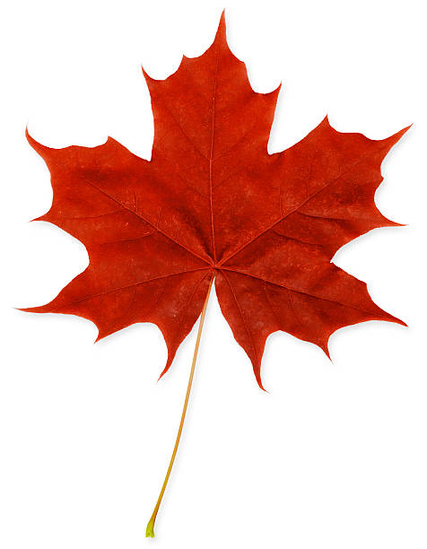
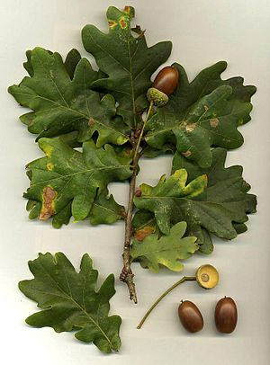
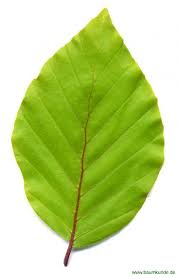

Der Ahorn
Die Ahorn-Bäume sind Laubbäume mit Blättern, die ungefähr die Form einer Hand haben. Insgesamt gibt es mindestens 100 Ahorn-Arten. Gemeinsam bilden sie die Gattung der Ahorne. Man findet sie auf der nördlichen Halbkugel der Erde. Sie wachsen nur dort, wo es nicht zu heiß ist, also in ganz Europa, in den USA und in Kanada sowie in Teilen Asiens.
In unseren Städten ist der Spitzahorn einer der häufigsten Bäume. Im Frühling blüht er vor vielen anderen Bäumen und sorgt für ein frisches, helles Grün. Im Herbst verliert er die Blätter als letzter.
Die häufigste Ahorn-Art in Mitteleuropa ist der Bergahorn. Er kann bis zu 500 Jahre alt werden und wächst in den Alpen sogar in 2000 Metern Höhe. Auf ihm und in seinem Holz leben viele Raupen, Käfer, Wildbienen und andere Insekten. Ebenfalls weit verbreitet in Europa ist der Feldahorn.
Ein besonderes Kennzeichen für den Ahorn sind die Samen. An jedem Samen hängt ein Flügel. Der dreht sich beim Herunterfliegen wie die Blätter eines Hubschraubers. So fliegen sie weiter vom Stamm weg und können den Baum weiter herum verbreiten.
Ahornholz wird vor allem für Möbel genutzt. Das Holz eignet sich auch sehr gut dafür, um Musikinstrumente oder Spielzeug zu bauen. Zum Süßen von Speisen kommt Ahornsirup zum Einsatz. Der wird aus dem Saft des Zuckerahorns gewonnen, der in Nordamerika vorkommt, also zum Beispiel in Kanada. Um den Saft zu gewinnen, ritzt man die Rinde an und hängt einen Eimer an den Stamm. Der fängt den Ahornsaft auf. Durch Einkochen wird er zähflüssig und man kann ihn in der Küche ähnlich wie Zucker verwenden.
Die charakteristische Form des Ahornblatts und die geflügelten Ahornfrüchte sorgen für einen hohen Wiedererkennungswert, weshalb Ahornbäume besonders in Deutschland zu den wohl bekanntesten Bäumen überhaupt gehören. In Europa sind sie mit Ausnahme der nördlichen Gebiete von Skandinavien praktisch überall heimisch. Daneben findet man Ahorne auch in Kleinasien und wie eben schon erwähnt in Nordamerika.
Für Kanada stellt der Ahornbaum sogar ein nationales Symbol dar. Auf der Nationalflagge ist ein rotes Ahornblatt abgebildet, welches die weitläufige Natur Nordamerikas symbolisiert und repräsentiert.
Beispiel eines Ahornblattes:

Bedeutung des Ahornbaums
Ahornbäume haben einen sehr lichten und heiteren Charakter, vor allem im Herbst. Sie gelten traditionell als Schutz versprechende Haus-Bäume, die Loslass-Prozesse begünstigen und zur Klärung der Gedanken beitragen. Auf Personen, die leicht erschrecken oder zwischen Extremen hin- und herpendeln, können sie besänftigend wirken. Außerdem fördern sie die Intuition, die Selbstfindung und den kommunikativen Ausdruck. Sie können Kraft-Bäume sein für Menschen, die zu wenig mit ihrem höheren Wesen verbunden sind. Zu ihren Stärken zählen weiters die Freiheitsliebe, der Idealismus, der Ehrgeiz, die Vielseitigkeit, die Willensstärke, das Selbstbewusstsein und die harmonische Vereinigung von Gegensätzen. Sie lieben Herausforderungen und scheuen keine Schwierigkeiten. Und all diese positiven Eigenschaften können sie uns vermitteln, wenn wir ihre Nähe suchen und uns auf ihre Schwingungen einlassen.
Weiterführende Informationen...
... finden Sie auf dieser und auf dieser Seite.
Die Eiche
Die Eiche ist ein Laubbaum, selten auch ein Strauch. Nur noch einen anderen Laubbaum gibt es häufiger in Deutschland, in der Schweiz und in Österreich, nämlich die Buche. Von den Eichen gibt es über 400 Arten. Von diesen Arten sind in diesen Ländern die Stieleiche und die Traubeneiche am häufigsten.
Eichen haben längliche Blätter, die in der Festigkeit ein wenig an Leder erinnern. Am Rand der Blätter sieht man eine Art Zacken oder Zähne, die außen rund sind. Bei den meisten Arten fallen die Blätter im Herbst ab.
Die Früchte der Eichen sind die Eicheln. Für Menschen und viele Tiere sind sie giftig, aber zum Beispiel das Schwein kann Eicheln fressen. Darum hat man früher die Schweine im Herbst in den Wald getrieben, zur Eichelmast. Die Schweine für den besten Schinken aus Spanien werden heute noch ausschließlich mit Eicheln gefüttert. Das gibt dem Schinken seinen besonderen Geschmack.
Menschen haben Eichen vor allem angepflanzt, weil das Holz viel aushält, aber auch gut zu bearbeiten ist. Man hat es zum Beispiel zum Bau von Schiffen verwendet, aber auch für Fässer, Sitzmöbel, Treppen oder Eisenbahnschwellen. Heute braucht man Eichenholz für teure Parkettböden. Eichenstämme werden aber auch in dünne Schichten zerschnitten. Man nennt sie Furnier. Diese Schichten klebt man heute auf Möbelplatten. So sieht das ganze Möbel sehr edel aus. Edel ist jedoch nur die Aussenschicht.
Eichen sind kräftig und leben lang. Darum hielten viele Menschen sie für heilig, sowohl die alten Religionen als auch das Christentum. In Deutschland gilt die Eiche als der typische Baum des Landes, der Nationalbaum.
Beispiel eines Eichenblattes

Bedeutung der Eiche
Die Eiche war in vielen alten Kulturen ein heiliger Baum, ein Lebensbaum, ein Gerichtsbaum, ein weiser Vater-Baum und die Königin der Bäume. Sie ist auch heute noch ein Sinnbild für Standhaftigkeit, Ehrlichkeit, Treue, Kontinuität, Festigkeit, Männlichkeit, Unsterblichkeit und väterliche Weisheit. Die Eicheln und Blätter werden gerne als Symbole für Wappen, Münzen, Karten und Abzeichen benutzt. Das keltische Baum-Horoskop besagt, dass die im Zeichen der Eiche Geborenen ähnliche Eigenschaften aufweisen wie der Baum. Sie strotzen vor Lebenskraft und sind nicht unterzukriegen. Sie können gut mit Konflikten umgehen, sind friedfertig, bodenständig, tapfer, ausdauernd, mutig und treu.
Weiterführende Informationen...
... finden Sie auf dieser und auf dieser Seite.
Die Buche
Die Buche ist ein Laubbaum. Man findet sie in der Mitte Europas: vom Süden Schwedens bis zum Süden von Italien. Sie wächst am besten auf eher fruchtbaren Böden, die auch leicht sauer oder verkalkt sein dürfen. In Deutschland, in Österreich und in der Schweiz ist die Buche der häufigste Laubbaum. Weil ihr Holz etwas rötlich aussieht, heißt sie auch Rotbuche.
Eine Buche kann bis zu 45 Meter hoch werden. Die Blätter haben die Form eines Eis, und sie wachsen so dicht, dass es unter dem Baum sehr dunkel ist. In Buchenwäldern haben es kleinere Pflanzen deshalb schwer. Die Buchen selber leiden schnell unter Fäulnis. Dies ist ein Problem für den Anbau.
Die Früchte einer Buche nennt man Bucheckern. Für Menschen sind sie etwas giftig, aber viele Tiere fressen sie, zum Beispiel Vögel, Eichhörnchen oder Mäuse. Damit verbreiten sie den Samen in den Bucheckern.
Buchen werden 200 bis 300 Jahre alt. Man baut sie gern in einem Forst an, denn aus dem Holz macht man nicht nur Möbel, Treppen und Parkettböden, sondern auch Kinderspielzeug, Kochlöffel, Bürsten und vieles anderes mehr.
Buchenholz ist auch zum Verbrennen sehr beliebt. Im offenen Kamin erzeugt es keine Knaller, weil es kaum Harz enthält. Es brennt also sehr ruhig und regelmäßig und gibt viel Wärme ab. Viel Holzkohle wird aus Buche hergestellt. Man braucht sie heute zum Grillen, früher brauchte man sie zum Schmieden, zur Herstellung von Glas oder zur Herstellung von Stahl im Hochofen.
Beispiel eines Buchenblattes

Bedeutung der Buche
Ein Thema der Buche ist die Desillusionierung sowie das Leben im Hier + Jetzt. Die Energie der Buche kann helfen, von allzu verkrampftem Denken loszukommen, um in der Gegenwärtigkeit und Zeitlosigkeit des Seins anzukommen. Sie ist ein guter Seelentröster, strahlt Festigkeit, Klarheit und Geborgenheit aus. Sie fördert die Entspannung und unterstützt die Klärung von Gedanken. Obwohl der Baum immer schon ein begehrtes Nutzholz lieferte, ist er nicht auszurotten, sondern auch unter widrigen Umständen sehr durchsetzungsfähig. Menschen, die laut keltischem Baumhoroskop im Zeichen der Buche geboren sind, sollen besonders geduldig und ausdauernd sein. Sehr ordentliche Naturen, effizient organisiert, gründlich, gepflegt und kompetent. Sie wirken attraktiv, bleiben aber dennoch unauffällig und bescheiden. Durch ihre Besonnenheit und innere Stärke eignen sie sich gut als Führungspersonen.
Weiterführende Informationen...
... finden Sie auf dieser und dieser Seite.